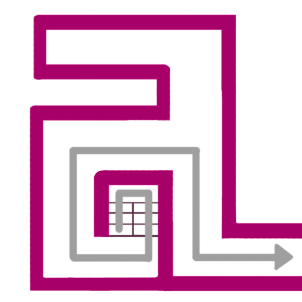
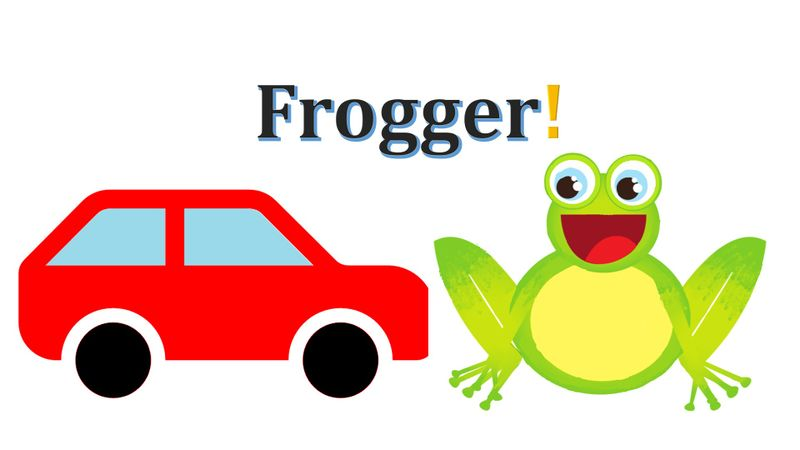

I am an undergraduate student of Systems & Computing Engineering and Electronic Engineering at the Universidad de los Andes, in Bogotá, Colombia. I am interested in front-end and back-end development, and electronic circuits design.
I have experience developing desktop and web aplications. The programming language I most use is Java, followed by Python. I also develop front-end with HTML, CSS ans JS, but i am still learning.
I have knowledge designing electronic circuits for general and specific purpose. I can design an amplifier with an specific gain with maximum symmetrical excursion given a frequency operation interval. I also have experience designing and building digital circuits to real world problems.
I play instruments as a hobby. The one that I have play the most is the piano, which I have been playing for almos 8 years. I also play the guitar an the violin a bit. Althoug I have been playing the piano for a long time, I am not very good at composition, so I have not composed ady pice yet.
I usually play videogames in my free time. I most play Moba videogames such as League of Legends, but RPG games are the ones that I like the most (My favorite videogame is Dark Souls, of course). Additionally, I find indie games very entertaining and unique.
Andes is an indoor navigation platform that shows the best path between two points in terms of time and distance and let you know where you are, with a typical error of 2 meters. To get the location of a person inside a building, the access points signals are used, and with pre-collected information, a KNN algorith is used to determine the position.
This product is based in the videogame 'Frogger' (developed by Konami, 1981). The assembly consists in an 8x8 led array, buttons for the controls, and a programmable FPGA. The goal of the game is to bring 3 frogs to their respective homes through a 3-lane street with 3 separators, while avoiding all the cars. This is an academic proyect from the course 'Digital electronic Systems' from the Universidad de los Andes.
